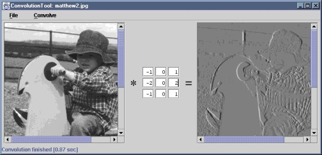

The ConvolutionTool application displays an input image, a
convolution kernel and the result of convolving the image with that kernel.
Kernel dimensions can be specified as command line parameters. Kernel
coefficients may be edited but are restricted to integer values. Kernels
can be loaded from or saved to files. Menus are provided for the selection
of different border handling and output rescaling strategies.
The application consists of source files
ConvolutionTool.java and KernelPane.java, together
with icon files star.gif and equals.gif. The
.class files and icons have been packaged as a single JAR file,
ConvolutionTool.jar. You can install the application by
copying this JAR file, along with either the MS-DOS batch file
ConvolutionTool.bat or the bash shell script
ConvolutionTool.sh, as appropriate. The batch file or script
should be edited to reflect the new location of the JAR file.